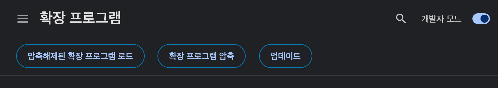
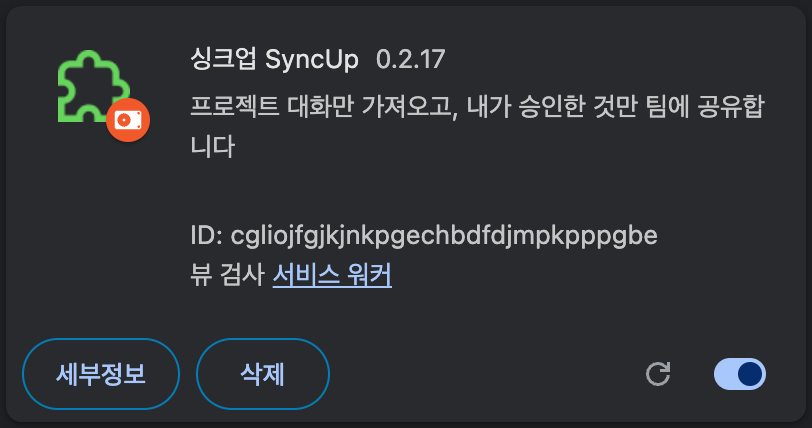

Chrome 주소창에 chrome://extensions를 입력하세요.


기존 SyncUp 연결 설정은 백업하고 이 버전으로 바꿔요. 이전 데이터와 연결 키는 삭제하지 않아요.
확장 팝업의 개인 검토함 주소를 위의 SyncUp 웹 주소로 맞추세요. 직접 팀을 만들었다면 아래 버튼으로 Chrome에서 GitHub에 연결하세요. 초대받았다면 Chrome에서 받은 초대 링크를 다시 여세요.
수집기를 켜면 Chrome 대화에서 카드 후보를 만들어 개인 검토함에 모아요.
자동 수집은 Chrome 확장 팝업에서 직접 켜세요.
현재 분류에는 Ollama의 gemma4:e4b-it-qat 모델과 개인 OpenAI API 키가 필요해요. 준비되지 않으면 대화는 분류 대기로 남아요.
Ollama 설치 안내 · 설치 후 모델을 준비해 주세요. 모델을 아직 준비하지 않았다면 웹의 설치 안내에서 방법을 볼 수 있어요.
이 화면의 탭을 닫아도 앱은 실행 중이에요. 종료하려면 아래 버튼을 눌러 주세요.